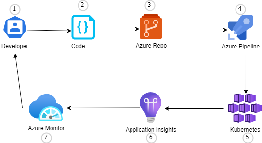

On this page
This is a complete DevOps course in one static site. It is written for a fresher who has never deployed anything, and it ends with eleven production-shaped systems you designed, secured, automated, monitored and documented yourself — on AWS, Azure, GCP and Kubernetes.
Everything here is offline and free: no account, no paywall, no tracking, no video. Just notes written the way a good senior explains things at your desk — what this is, why we need it, how it works, the command, the expected output, what just happened, what can go wrong and how to fix it.
THE ONE IDEA THIS WHOLE SITE IS BUILT ON
You are being trained as a DevOps engineer, not an application developer. In every project here, the application is received: a developer (in our case, an AI coding agent working from a prompt you copy) writes it and pushes it to GitHub. Your job begins at git clone. That is not a shortcut around learning — it is exactly how the job is divided in real companies, and it is the division this site will keep enforcing from Project 01 to Project 11.
The loop you will repeat eleven times
Nine steps, every single project. The tools change; the loop does not. By Project 06 you will notice you have stopped reading the instructions and started predicting them — that is the moment the learning has actually happened.
What you get, and what you are not supposed to do
You get: god-mode notes on every topic (what / why / mental model / how / commands / real usage / production scenario / common mistakes / troubleshooting / best practices / interview answer / revision), a simulated terminal lab for each module and each project where you type real commands and get real failure output, eleven full projects with a cloud or two under them, DevSecOps as its own phase, AIOps and MLOps projects on GCP, an interview bank with scenario rounds, a troubleshooting playbook, revision sheets, and a Test-Me section with phase exams.
You do not do: write the application code (the agent does), run a 20-command paste-and-pray, or declare victory without verification. If a page ever looks like "here are 20 commands", stop and read it again — each command is introduced one at a time with what it proves.
Where the material comes from
This site is built on top of a real repository of 41 DevOps projects (the NotHarshaa/DevOps-Projects collection, cloned here). We use it as raw material, not as a syllabus:
Project 41 — Jenkins + SonarQube + Trivy
the DevSecOps pipeline shape, stage by stage, including the exact trivy flags and the quality-gate step
Project 01 — Java three-tier on AWS
three-tier architecture, Terraform modules, and a real troubleshooting guide (RDS reachability, ALB target health)
Project 04 — Django on ECS
ECR with scanOnPush=true and immutable tags, multi-stage Dockerfile, Secrets Manager wiring
Project 03 — Linux assignment
the foundation drill our Linux lab is modelled on
Project 07 — Azure DevOps + AKS
the developer → repo → pipeline → cluster → monitor loop (diagram below)
Project 08 — EKS with eksctl
cluster bring-up and the 2048 deployment walkthrough people actually follow
Where the reference repository is thin (it is a project collection, not a course), the gaps are filled with standard professional practice — and every page says which commands come from a real project and which are the general form.

Choose your door
The roadmap
what to study in which order, how long it takes, and the gate you must pass before moving on
Linux survival kit
the 35 commands and the failures they explain — where 70 % of incidents live
Cloud core concepts
ten concepts, three providers: learn it once and translate forever
The eleven projects
each one with its own copyable Developer Agent Prompt, journey, lab, interview questions and resume bullet
DevSecOps phase
the seven security categories, their owners, and the pipeline order that makes them bite
Virtual labs
simulated terminals for every module and project — real commands, real failure output, no real bill
Troubleshooting playbook
20 recurring failures taught as a procedure: observe → check → identify → fix → verify → prevent
Interview bank
questions by category with a professional answer, a plain explanation and a follow-up chain
The rules this site follows (they are why it is written this way)
- You never write the application. Every project begins with a Developer Agent Prompt you copy into a coding agent, and a handoff that looks like a real company's.
- Simple English, no jargon without a definition. An experienced Indian technical tutor explaining it to a fresher — direct, warm, zero showing off.
- One command at a time, each with its expected output. Never a wall of twenty you paste and pray at.
- Every step answers WHAT / WHY / HOW / COMMAND / EXPECTED OUTPUT / WHAT JUST HAPPENED / WHAT CAN GO WRONG / HOW TO FIX.
- Things break on purpose. Every project has failure scenarios and a troubleshooting section, because that is 60 % of the actual job.
- The simulated terminal is honest. It pretends to be a machine, never to be your AWS account — and it says so on every lab page.
- Understanding beats volume. One project understood deeply is worth ten copy-pasted, and the interview will find out which you have.
How to read a page here
| Block | What it is for |
|---|---|
| step | A numbered action: context, command, expected output, explanation, what can go wrong. Do these in order. |
| callout note | Background worth knowing; skippable on a first read. |
| callout warn | The trap. Read it before you type, not after the incident. |
| callout fix | Failure → cause → what to do, in table or list form. |
| callout why | The reasoning a senior would give in a design review. This is the part that gets you hired. |
| term | A transcript. Lines starting !! are errors, ++ succeeded, ## are annotations from me — not real output. |
| checklist | Tick these; your browser remembers. Unticked boxes on a revision sheet are your study list. |
| lab | The simulated terminal. Type what it asks, or press Show command if you are stuck. Use Troubleshooting mode on the second pass. |
| quiz | Test-Me block. Wrong answers get explanations, because that is the useful half. |
| revision | The 5-minute sheet. Read it the morning of an interview. |
A promise about the tone
There will be no "in today's fast-paced world", no stock photo of a padlock, no 40-line introduction, and no claim that you will be "job-ready in 30 days". You will be job-ready when you can stand in front of a system you did not write, find why it is broken, fix it in code, prove it works, and explain the trade-offs you made. That takes the eleven projects. Some of them will take you a week each. That is the correct speed.
Start now, in this order
Read the roadmap (12 minutes) → Linux → do the Linux lab twice → Networking → Git → Docker → then Project 01, where the real work starts. If you already know a topic, take its Test-Me quiz first and skip the reading only if you score above 80 %.
Part of the DevOps Academy built from the 41-project reference repository · offline · no tracking